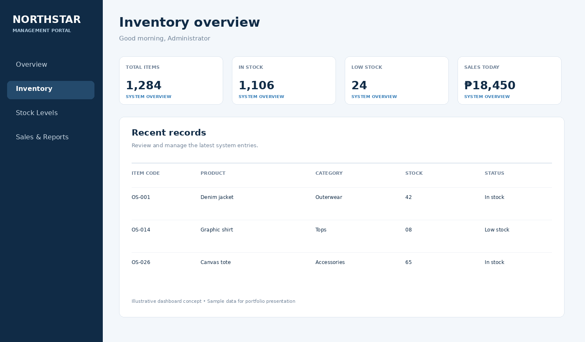
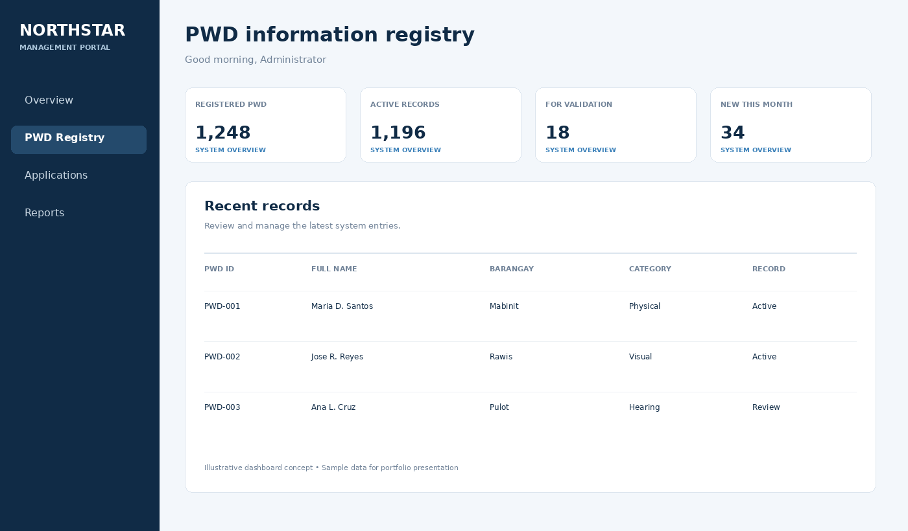
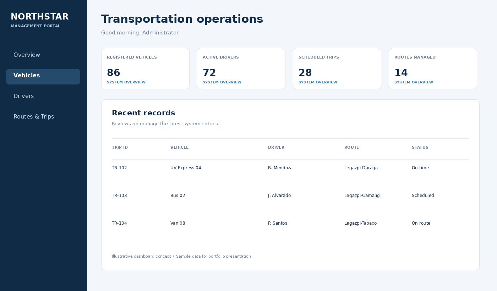

Frontend Development
Structuring web interfaces with core web technologies.
HTML CSS JavaScript
HELLO, I'M
A technology-focused student interested in building practical digital solutions. I enjoy understanding how systems work, turning requirements into usable interfaces, and continuously strengthening my development skills through hands-on projects.
I am a dedicated and hardworking student with a strong interest in technology and its development. I am always willing to explore new ideas, acquire new skills, and expand my knowledge in Information Technology.
I consider myself responsible, flexible, and determined to grow both personally and academically. I welcome new experiences, teamwork, and challenges that help me improve and achieve my future goals.
A growing technical foundation developed through coursework, practice, and academic system projects.
Structuring web interfaces with core web technologies.
Exploring server-side application development.
Working with relational data and structured information.
Tools for coding, local development, and source control.
ADDITIONAL KNOWLEDGE Basic web development · Website design
Selected academic system concepts focused on organized data, efficient workflows, and practical information management.

A web-based system designed to manage clothing inventory, monitor stock levels, and record financial transactions.

A web-based system for organizing and maintaining personal information and records of persons with disabilities.

A web-based system for organizing transportation services, vehicle information, driver records, routes, and schedules.
Project visuals are illustrative dashboard concepts for portfolio presentation, not screenshots of deployed applications.
Building a foundation in information technology through formal study and hands-on practice.
Brgy. 14 Sikatuna St., Old Albay, Legazpi City
Approaches responsibilities with effort and commitment.
Open to exploring new ideas, skills, and technologies.
Can adjust to changing tasks and new experiences.
Driven to improve and contribute in different situations.
Connect for inquiries, collaboration, or opportunities to learn and grow.